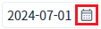
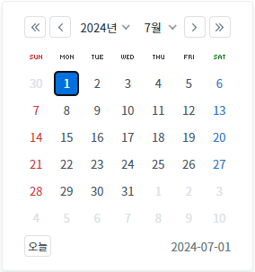
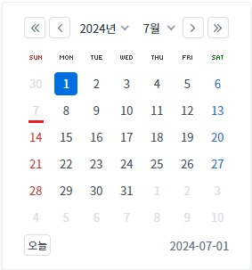
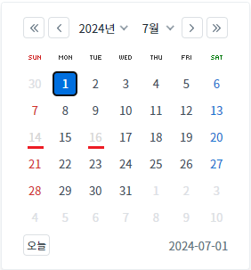

InputCalendar의 'disableDate' 메소드를 사용하여, 캘린더에 지정한 날짜를 비활성화하는 예제입니다. 비활성화 된 날짜는 사용자가 선택할 수 없습니다.
이 기능은 사용자가 입력하는 날짜, 기 입력(할당)된 날짜에 대해서는 제어하지 않습니다.
캘린더의 날짜 비활성화화기 - 지정일
캘린더의 날짜 비활성화화기 - 지정일(다중)
예제 영역 '캘린더의 날짜 비활성화화기 - 지정일'에서 테스트합니다.1
STEP 1: 캘린더의 날짜를 확인합니다.
InputCalendar의 캘린더 아이콘을 클릭하여 캘린더의 날짜를 확인합니다.
올해(년)의 7월 1일이 선택되어 있고, 캘린더의 모든 날짜가 활성화된 상태입니다.
Image 1.브라우저(Chrome) 실행 예시 - 캘린더 아이콘

Image 2.브라우저(Chrome) 실행 예시 - 캘린더

2
STEP 2: 버튼 '올해의 7월 7일 비활성화'를 클릭합니다.
3
STEP 3: 실행 결과를 확인합니다.
InputCalendar의 캘린더 아이콘을 클릭하여 캘린더의 날짜를 확인합니다.
올해 7월 7일이 비활성화된 것을 확인합니다. 비활성화된 날짜는 선택되지 않습니다.
Image 3.브라우저(Chrome) 실행 예시 - 캘린더

예제 영역 '캘린더의 날짜 비활성화화기 - 지정일(다중)'에서 테스트합니다.1
STEP 1: 캘린더의 날짜를 확인합니다.
InputCalendar의 캘린더 아이콘을 클릭하여 캘린더의 날짜를 확인합니다.
올해(년)의 7월 1일이 선택되어 있고, 캘린더의 모든 날짜가 활성화된 상태입니다.
Image 4.브라우저(Chrome) 실행 예시 - 캘린더 아이콘
Image 5.브라우저(Chrome) 실행 예시 - 캘린더
2
STEP 2: 버튼 '올해의 7월 14, 16일 비활성화'를 클릭합니다.
3
STEP 3: 실행 결과를 확인합니다.
InputCalendar의 캘린더 아이콘을 클릭하여 캘린더의 날짜를 확인합니다.
올해 7월 14, 16일이 비활성화된 것을 확인합니다. 비활성화된 날짜는 선택되지 않습니다.
Image 6.브라우저(Chrome) 실행 예시 - 캘린더

스크립트를 작성합니다.
Example 1.Script
//예제 파일에서는 스크립트 scwin.btn_ex1_onclick에 작성되어 있습니다. //inputCalendar "ica_exam_1"에 2024년 7월 7일 비활성화 하기 ica_exam_1.disableDate("20240707");
스크립트를 작성합니다.
Example 2.Script
//예제 파일에서는 스크립트 scwin.btn_ex2_onclick에 작성되어 있습니다. //inputCalendar "ica_exam_2"에 2024년 7월 14, 16일 비활성화 하기 ica_exam_2.disableDate("20240714 20240716"); //날짜는 공백으로 구분
disableDate( dateStr )
ioFormat
inputReadOnly